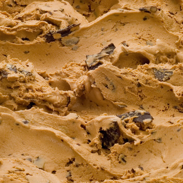
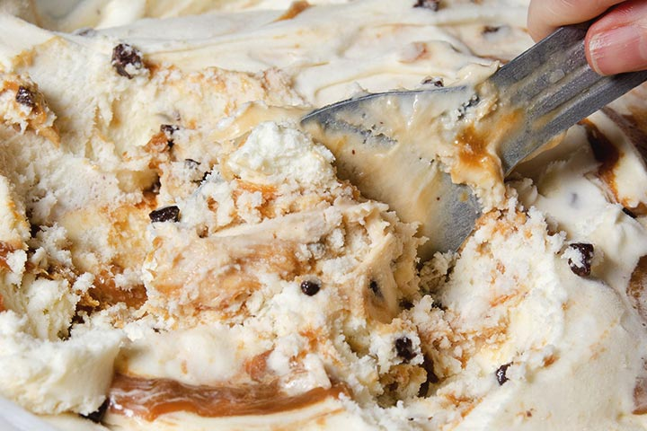

El helado es un postre congelado que generalmente se hace a base de ingredientes como leche, crema, azúcar y sabores adicionales como frutas, chocolate, nueces, entre otros. La mezcla se congela mientras se agita para incorporar aire, lo que da como resultado una textura suave y cremosa. Además de los ingredientes básicos, los helados pueden contener estabilizadores, emulsionantes y otros aditivos para mejorar la consistencia y prolongar la vida útil.
¿A qué heladería vamos?
Existen varios puntos de venta que llamaremos heladerías a donde uno puede ir por un helado. Las más recomendadas son:
Menta Granizada
El helado de menta granizada es una variante refrescante y deliciosa que combina el sabor a menta con la textura granizada del chocolate.

Frutilla
El helado de frutilla se elabora principalmente con fresas o frutillas, ya sea incorporándolas como puré, trozos o extracto. Este tipo de helado es conocido por su sabor dulce y refrescante, así como por el distintivo color rosado o rojo que obtiene de las fresas.

Dulce de Leche Granizado
El helado de dulce de leche granizado es una variante del helado de dulce de leche que incorpora una textura granulada o cristalizada en lugar de ser suave y cremoso. El término "granizado" hace referencia a la presencia de pequeños cristales de chocolate.

Tramonana
La influencia es italiana pero el origen semántico proviene de un viento helado de España. Con base de crema americana, su elemento distintivo es la mezcla de dulce de leche fresco con pedazos de galleta cubiertos de chocolate
